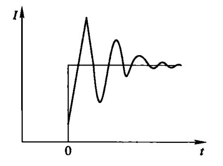
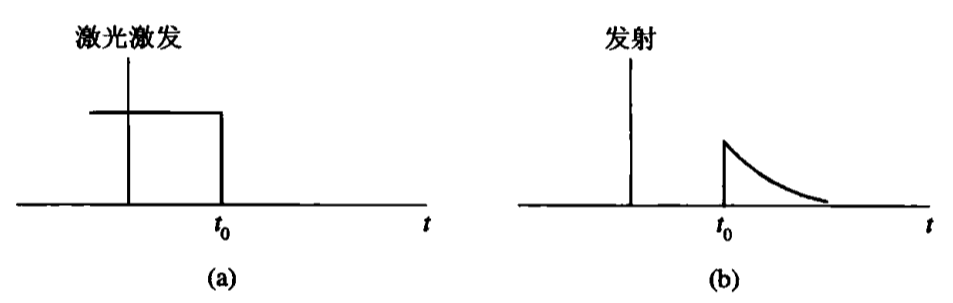
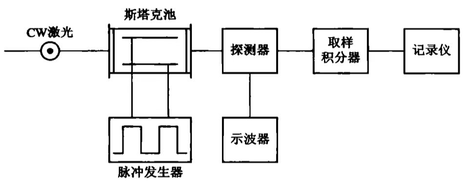
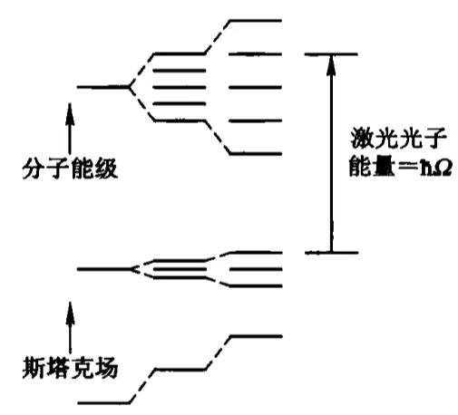
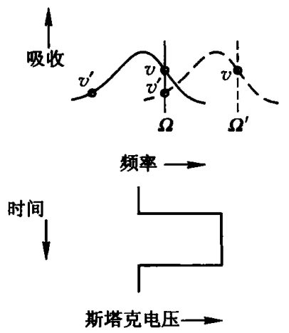
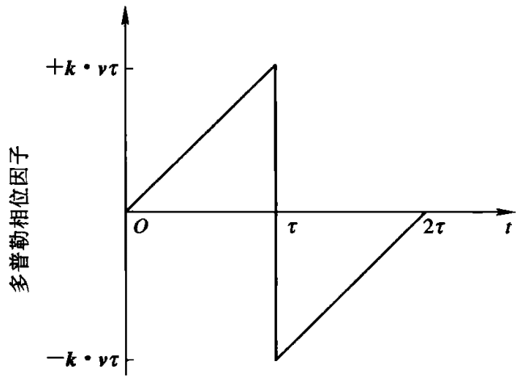

前面几章讨论的光与原子相互作用的非线性光学过程都属于稳态现象，都认为相互作用时间较弛豫时间\((T_1, T_2)\)长得多，因此，原子介质的响应用极化率\(\chi\)描述.
在强超短脉冲光与介质发生共振相互作用，且其相互作用时间比弛豫时间还要短的情况下，光与原子系统的相互作用属于瞬态相干作用，将有光学章动、光学自由感应衰变、光子回波与光学自感应透明等新的光学现象出现.
这种情况下，原子的极化不再是瞬时光电场的显函数，必须考虑因果性原理，可以采用形象化的矢量方法描述.
这一章将讨论几种瞬态相干光学效应，在讨论这些现象之前，首先引入描述光与物质相互作用的矢量描述方法.
稳态现象：系统经过暂态变化后，其宏观物理状态不再随时间变化的现象.
弛豫作用：系统受到外界扰动、偏离平衡状态后，在内部相互作用或与环境的能量交换下，逐渐恢复到平衡状态的过程
因果关系：光与原子的相互作用时间远大于弛豫时间，意味着原子有足够的时间建立稳态响应，因此可以使用稳态极化率 \(\chi\) 描述介质对光场的响应
因果性原理：就是前面学的那个
瞬态相干光学作用下的原子介质响应，也可以用非线性极化率chi描述（那因果关系是？）
瞬态相干光学作用是指：短激光脉冲与共振介质的相干相互作用过程.
瞬态相干光学研究的就是这种瞬态相干光学作用过程的瞬时变化规律.
通常认为，入射光脉冲的长或短，是与介质的共振跃迁弛豫时间相比较而言的.
描述共振介质弛豫特性的参量有三个：
对于一般处于低温条件的非均匀固体共振介质，有：\(T_2^*\lt T_2\lt T_1\)；
对于常温下的气体共振介质，有：\(T_2^*\ll T_2\lt T_1\).
瞬态相干光学作用中，入射光的上升时间（或下降时间）\(\Delta t\)、脉冲持续时间\(\tau_p\)均远小于\(T_1,~T_2\)，即：
$$\Delta t,\tau_p\ll T_2, T_1$$在这样短的相互作用时间内，介质粒子通过自发辐射及其他各种均匀加宽机制所导致的随机自发弛豫过程均可忽略，因而，可视所有工作粒子同步地与入射光发生作用.
而入射光的脉冲很短，其光谱宽度由脉冲持续时间决定，满足测不准关系，这意味着整个光脉冲的持续时间是光场的相干时间.
因此，瞬态相干光学作用是指：完全相干的强光场与忽略随机自发弛豫行为的共振吸收介质间的快速相干作用.
瞬态相干光学作用的最主要特点是共振介质对入射光场的响应特性，它不仅与所考察的时刻\(t\)的入射光场有关，而且与时刻\(t\)之前的所有光场都有关.
相干光脉冲作用于共振介质，将原子系统预置到可相干叠加的状态中，由于状态的相干（同步）性，其偶极矩的相位将呈现有序的排列，并遵从Maxwell方程产生相干辐射.
这种相干辐射将带有光与物质相互作用过程中的所有特征信息，即不仅带有辐射时的光和介质的特性，还“记忆”该时刻前的入射光与介质的特性.
从数学上讲，在瞬态相干光学作用下，共振介质在某一时刻对光的响应特性，不仅决定于该时刻的光场瞬时值，
共振介质：通常是指具有与入射光频率相匹配或接近的内部能级跃迁，并且能够与该光场发生共振相互作用的介质
原则上，所有普通物质介质都存在某些共振频率，但并非所有介质都能在任意入射光频率下发生共振
上升/下降时间：指光脉冲的光强从低值上升/下降到高值/低值所经历的时间
瞬态相干光学作用，通常是短脉冲激光作为输入，与共振介质发生相互作用的过程.
光学章动效应是核磁共振技术中自旋章动效应的光学模拟.
当脉冲前沿很陡的光波入射到共振吸收介质中时，介质对光并不是简单的吸收或放大，而是经过一段有限的弛豫振荡后，过渡到稳定状态，如下图所示.

由图可见。经过共振吸收介质后的透射光脉冲的前言，呈现为阻尼式的周期振荡，其振荡频率与入射光场有关，起伏振荡的阻尼时间由介质的横向弛豫时间\(T_2\)决定.
光学章动的物理机制是：相干光场与共振介质相互作用时，在其能量交换过程中所产生的弛豫振荡.
也就是说，原子或分子在强共振光场照射下，重复地受激吸收与受激发射，导致透射光产生增强和减小的周期振荡.
由于这种相干作用必须在相位相干的弛豫时间\(T_2\)内完成，因此振荡具有有限的阻尼时间.
光学章动可由Bloch-Maxwell方程组描述.
由于光与介质相互作用的时间很短，\(t\ll T_1, T_2\)，故可忽略弛豫.
此时，Bloch方程变为：
$$\frac{\partial u}{\partial t} = -\Delta v$$ $$\frac{\partial v}{\partial t} = Rw + \Delta u$$ $$\frac{\partial w}{\partial t} = -Rv$$[设]初始条件为：
$$\left.u(t)\right\rvert_{t = 0} = u(0) = 0$$ $$\left.v(t)\right\rvert_{t = 0} = v(0) = 0$$ $$\left.w(t)\right\rvert_{t = 0} = w(0)$$则可求解得到\(t\gt 0\)时，有：
[令]\(\beta = \sqrt{R^2 + \Delta^2}\)
$$\therefore \frac{\partial^2 v}{\partial t^2} + \beta^2v = 0$$解此微分方程，得：
$$v(t) = C_1\cos(\beta t) + C_2\sin(\beta t)$$ $$\because v(0) = C_1 = 0$$ $$\therefore v(t) = C_2\sin(\beta t)$$ $$\because v'(0) = Rw(0) = [C_2\beta\cos(\beta t)]_{t=0} = C_2\beta$$ $$\therefore v(t) = \frac{Rw(0)}{\beta}\sin(\beta t)$$任意时刻\(t\)的Bloch矢量的振幅满足：
Bloch矢量\(\boldsymbol{B}(t)\)将以频率\(\beta\)绕等效场\(\boldsymbol{\beta}\)进动.
严格共振时，\(\Delta = 0,~\boldsymbol{\beta} = -R\boldsymbol{i}\)，可得：
$$u(t) = 0$$ $$v(t) = \omega(0)\sin(Rt)$$ $$w(t) = \omega(0)\cos(Rt)$$此时，Bloch矢量\(\boldsymbol{B}\)绕Ⅰ轴以Rabi翻转频率\(R\)旋转.
什么是严格共振？
什么是I轴？
什么是Rabi频率？
考虑弛豫现象的Bloch方程为：
$$\frac{\partial u}{\partial t} = -\Delta v - \frac{u}{T_2}$$ $$\frac{\partial v}{\partial t} = Rw + \Delta u - \frac{v}{T_2}$$ $$\frac{\partial w}{\partial t} = -Rv - \frac{w - w^0}{T_1}$$为了得到解析解，设\(T_1 = T_2 = T\).
样品原子被一相干光共振激发处于相干态时，突然去掉相干光场，在\(T_2\)时间内辐射衰减的相干光波现象.
这种辐射与通常所讲的自发辐射不同，是一种只在前向方向上的相干辐射，实际是相干的自发辐射，其示意图如图所示：

由上述讨论可见：瞬态光学章动与自由感应衰减效应都涉及光场的突然加上与突然去掉，即突然的开与关.
实际上，如此快的过程利用任何机械手段都不能实现，但随着超短脉冲激光技术的发展，这个问题得到了较好的解决.
问题是在目前有限的激光器波段的情况下，对于工作物质要求实现所希望的共振作用是极难解决的.
1971年，布瑞维尔与舒麦克提出了一种实际上可以实现瞬态相干效应的方法：斯塔克开关技术.
如图所示：用频率为\(\Omega\)的连续激光照射气态激发介质时，由于气态分子具有极窄的共振线，所以只有\(\Omega\)严格等于分子的跃迁频率\(\omega_0\)时才会有强的吸收.

共振线：原子或分子对不同频率光的吸收强度随频率变化形成的一条谱线，吸收越强，共振峰越高.
斯塔克开关技术利用分子具有较大的一级斯塔克效应，即加在分子样品上的直流电场将使之产生较大的频移（如图所示），因此可通过改变加在样品上的直流电场调节介质能级，使其与入射激光共振与非共振.

在斯塔克开关实验装置中，探测器是用来监测通过介质的入射光与样品介质的辐射光，在直流背景上的交流信号就是瞬态相干信号.
其实没有搞懂斯塔克效应是什么东西.
进一步，若考虑气态分子介质吸收线型的多普勒展宽，则斯塔克效应示意图如图所示：

考虑多普勒展宽的斯塔克效应
在讨论光学自由感应衰减效应时，指出了非均匀加宽对衰减的贡献.
这种非均匀衰减起因于气体分子在衰减时的速度不同，导致相位不同，因此时一种非均匀的消相过程.
速度不同->频率不同->相位不同
消相过程：相位差随时间不断变化，导致粒子间的相位逐渐失去同步.
这种非均匀消相是一种可逆的现象，如果在时间上使消相过程反转，就可以瞬时地重新获得储存在样品中的相干电磁能量，这就是回波的概念.
光学领域内，若有两个强短激光脉冲相继入射到共振吸收介质中，经过一段时间会观察到第三个定向的光脉冲出射，这个脉冲称为光子回波.
消相时，能量储存在被激发的粒子体系中.
为简单理解消相-同相的过程，考察如图所示的Doppler相位因子随时间的变化规律.

[设]\(t=0\)时，样品受到激光脉冲的共振相干激发.
\(t\gt 0\)时，以速度\(\boldsymbol{v}\)运动的气体分子的相对Doppler相位随时间变化为\(\boldsymbol{k}\cdot \boldsymbol{v}t\)，\(\boldsymbol{k}\)为光辐射的传播矢量.
若在\(t = \tau\)时，对样品施加另一个脉冲，使相对Doppler相位变号，从\(\boldsymbol{k}\cdot\boldsymbol{v}\tau\)变为\(-\boldsymbol{k}\cdot\boldsymbol{v}\tau\)，则在\(t = 2\tau\)时，气体分子将重现\(t=0\)时的初相位.
若气体分子都以同样方式经历了一个这样的过程，则宏观上该样品就会在\(t = 2\tau\)时相干地辐射一个光脉冲：光子回波.
下面，首先讨论利用斯塔克开关技术产生的光子回波理论，然后利用Bloch矢量方法进行描述.